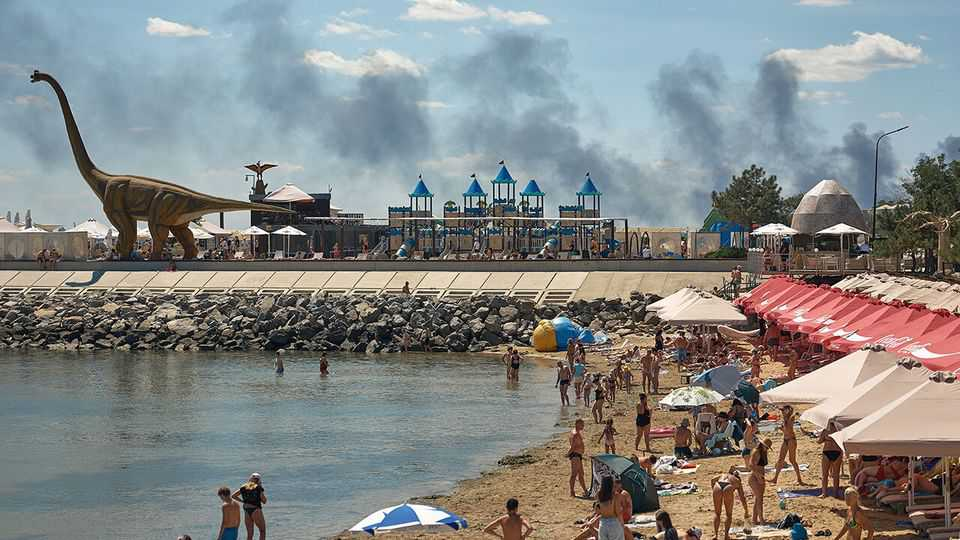

Russian strikes may keep Ukraine's grain from reaching markets
Missile hits on ports near Odessa could stop the export of a bumper harvest

Jul 30th 2026
This hit was only the latest, says the security guard, waving at a scorched patch on the lawn where a week ago a rocket struck the depot in Odessa port where he works. He hears a strike “almost every day”. A moment later sirens go off, followed by an earth-shaking thump, anti-aircraft fire and the high-pitched whine of an interceptor drone.
Russia has stepped up its attacks on Ukraine’s ports in recent weeks, with potentially dire consequences for agricultural exports. Fully 90% of Ukraine’s grains and oilseeds go through Odessa and the nearby ports of Chornomorsk and Pivdenne. Russia is hitting infrastructure and shipping with missiles and drones from Crimea. There have been at least 56 attacks this month, killing 26 port workers and sailors. Some facilities have suspended operations, including a sunflower-oil terminal at Chornomorsk set ablaze on July 14th.
Ukraine’s armed forces do their best. Commander Dmytro Pletenchuk explains that some air defences have moved out to sea, with heavy machineguns mounted on patrol boats. A naval helicopter, he says, recently downed seven Shahed drones on a single mission. But Russia is burying them with numbers. On July 19th the Golden Leo, a Turkish-owned grain carrier, was hit by cruise missiles within sight of holidaymakers on Odessa’s beaches. Ten sailors were killed. On July 29th VesselFinder, a tracking service, showed no arrivals at the ports in the previous 24 hours, though it misses ships that turn off their transponders.
On July 22nd Maersk, a Danish shipping giant, announced its vessels would unload at Constanta, in Romania, rather than Chornomorsk. Oleksiy Smolyar, director of an Odessa-based maritime-services company, says large shipping firms have been avoiding Ukraine since spring: the costs of war-risk insurance plus potential lost business outweigh the fees. Their place has been taken by opportunistic Middle Eastern outfits, which bought their first ships (“maybe not so new and not in such good condition”) when Russia launched its full-scale invasion four years ago. Mr Smolyar’s business, Trident Maritime, has shifted to providing inspection services to the “convenience states”—Guinea-Bissau, Togo and the like—under whose flags the opportunists sail.
The attacks coincide with Ukraine’s harvest, forecast at 81m tonnes of grains and oilseeds, up from 80m tonnes last year. But Taras Vysotsky, the agriculture minister, warns that exports were down by a quarter in May and June, and “if attacks double or triple, it’ll really be a challenge.” Agricultural goods make up nearly 60% of Ukraine’s total exports.
The ministry tracks the numbers of farmworkers killed by Russian first-person-view drones. “Every week we hear that three, four, five farmers have been killed,” says Mr Vysotsky. “It’s obvious that they deliberately hunt people.” Also targeted is farm machinery: 820 pieces of equipment, from harrows to irrigation systems, have been destroyed this year.
Two hours’ drive north of Odessa, Anatoliy Artemenko stands in a field dotted with cylindrical bales. He has 2,000 hectares and grows rice and amaranth as well as wheat and maize. This year he will have a bumper harvest. His problem is what to do with it. With no exports there are no buyers, and his barns are nearly full of unsold produce, although over half the harvest is still to come in.
His other big problem is labour. Conscription rules allow businesses deemed critical to the war to reserve up to half their employees. But exemptions must be renewed every six months, and the criteria are tightening. “A lot of men, when they realise that I can’t reserve them, either run away or go into hiding,” says Mr Artemenko. Of the 50-odd he employed before the war, he has lost 30 to recruitment or draft-dodging. Local women don’t want to learn to drive lorries or tractors, he says. Instead he pays his remaining male staff to work twice the hours.
The road to Kyiv swoops between huge fields of wheat and sunflowers. Combines are at work, haloed by clouds of chaff. The earth is startlingly black, Ukraine’s famously fertile chernozem. But what use is a good harvest, asks Mr Artemenko, if there is no way of getting it to market? ■